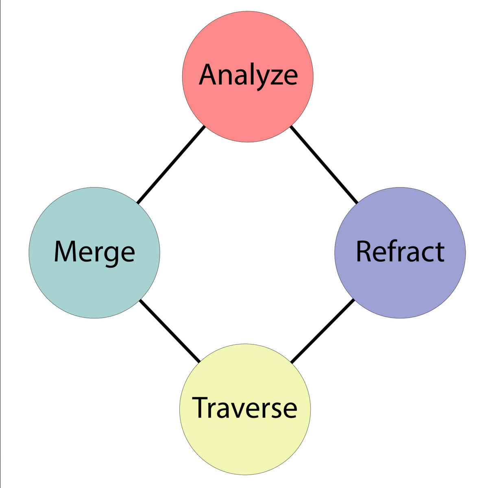

Devlog 2: Getting Going
What Can the Player Do?
With the theme of discovering identity, we were left to decide what player abilities would lend themselves to the discovery of identity and exploring the unknown. Our decided mechanic was the splitting and merging of the player, aka “Refracting” and “Merging,” as a prismatic entity. The idea being as if you had to leave pieces of yourself, or discover new ones, to traverse the level.
The Heartbeat of the Game
The first question we asked ourselves after establishing a team, project expectations, and our target audience was “what is the player going to do?” We had a type of experience in mind, but what core interactions would support our gameplay? How would it support our theme of discovering identity?
Focusing on discovery, one often reveals aspects of their identity through the choices they make. So, we wanted a core gameplay loop (CGL) that encourages discovery and decision making through important decisions with consequences. Hence we came up with the CGL below, clockwise starting at Analyze:
The player would analyze their environment, decide how to traverse the area, and then do so through the main mechanics.